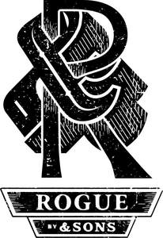
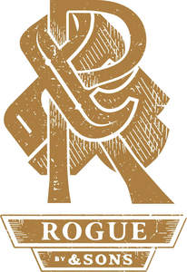

Trade Mark Journal No.2025/010 7 March 2025
UK00004140766 24 December 2024 (3,9,14,16,18,24,25,35)
Mark 1

Mark 2

- Class 3
- Male grooming products and preparations; shaving preparations; shaving gel; shaving foam; shaving cream; shaving lotions; shaving balm; shaving soap; after-shave balms; after-shave lotions; after-shave creams; after-shave preparations; cosmetics; personal care products and preparations; toiletries; perfumery; cologne; after-shave; anti-perspirants; body deodorants; cosmetic creams; facial washes; facial cleansers; facial oils; beard oils; beard balms; combing oils; exfoliants for the care of the skin; skin moisturisers; cosmetic moisturisers; non-medicated moisturisers; hair styling gel; hair lotions; hair wax; hair pomade; facial hair wax; shampoo; conditioners; toiletry preparations; soaps; hand washes; body wash; shower gel; body scrubs; facial scrubs.
- Class 9
- Eyewear; glasses; sunglasses; spectacles; fashion spectacles; spectacle supports; frames for spectacles; cases and holders for eyewear and spectacles; parts and fittings for all of the aforesaid goods.
- Class 14
- Jewellery; precious stones; imitation jewellery; jewellery made of precious metals; jewellery made of semi-precious metals; jewellery made of non-precious metals; articles of jewellery with ornamental stones; rings (jewellery); bracelets; earrings; necklaces; pendants; cuff links; tie clips; chains (jewellery); metal chains; horological and chronometric instruments; watches and timepieces; wrist watches; pocket watches; watch straps; leather watch straps; metal watch straps; plastic watch straps; bracelets for watches; bracelets for watches made of leather; bracelets for watches made of metal; bracelets for watches made of plastic; cases for timepieces; watch cases; key chains; key chain tags; key rings of leather; key holders (trinkets or fobs); key fobs; leather key fobs; jewellery boxes; leather jewellery boxes; parts and fittings for all of the aforesaid goods.
- Class 16
- Printed matter; brochures; magazines; booklets; pamphlets; catalogues; posters; packaging materials; packaging containers of paper; packaging containers of cardboard; packaging containers of card; gift packaging; price tags; swing tags; stationery; pads [stationery]; notebooks; pocket books; journals; diaries; pocket diaries; folders [stationery]; binders [stationery]; stationery cases; writing cases [stationery]; pen cases; desk organisers.
- Class 18
- Bags; handbags; shoulder bags; leather bags; tote bags; reusable shopping bags; travel bags; overnight bags; garment bags for travel; toiletry bags and wash bags for carrying toiletries; sports bags; bags for sports clothing; holdalls for sports clothing; gym bags; athletics bags; kit bags; luggage cases; holdalls; briefcases; rucksacks; backpacks; belt bags; hip bags; travel cases; overnight cases; folio cases; document cases; purses; leather and imitations of leather; leather straps; straps made of imitation leather; card holders; key cases; key pouches; credit card cases and holders; wallets; leather wallets; trunks (luggage); suitcases; luggage; luggage straps; wheeled luggage; luggage tags; leather and imitation leather belts; parts and fittings for all of the aforesaid goods.
- Class 24
- Textiles; woven and textile products not included in other classes; non-woven textiles; non-woven fabrics; non-woven textile articles; textile piece goods; textiles for making articles of clothing; household textiles; household textile goods; soft furnishings; fabrics; plastic substitutes for fabrics; bed and table covers; furniture covers (unfitted); cushion covers; cloths; bed linen; bed sheets; fitted sheets; flat sheets; pillow cases; covers for pillows; duvets; covers for duvets; table linen; table napkins of textile; tea towels; travellers’ rugs; towels; table mats and coasters; curtains; bedspreads; throws; blankets; curtains for showers; parts and fittings for all of the aforesaid goods.
- Class 25
- Clothing, footwear and headwear; clothing of leather and of imitation leather; casualwear; sportswear; leisurewear; rainwear; beachwear; gymwear; shirts; casual shirts; long-sleeved shirts; short sleeve shirts; corduroy shirts; t-shirts; printed t-shirts; tops; jumpers; polo shirts; jackets; raincoats; waterproof clothing; water resistant clothing; weatherproof clothing; waistcoats; waistcoats [vests]; pullovers; long sleeve pullovers; turtleneck pullovers; cardigans; trousers; jeans; chinos; leggings; sweat pants; sweat shorts; sweat bottoms; jogging pants; track suits; blazers; socks; sweatshirts; pants; jerseys; underwear; nightwear; swimwear; surfwear; outerwear; coats; fleeces; padded jackets; parkas; rainproof jackets; weatherproof jackets; leather jackets; bomber jackets; denim jackets; duster jackets; hooded tops; hooded pullovers; hooded sweatshirts; vests; shorts; swim shorts; boots; shoes; leather shoes; sandals; sneakers; trainers; slippers; pumps (footwear); plimsolls; thongs; flip-flops; hats; caps; snapbacks (hats); beanie; beanie hats; gloves; leather gloves; mittens; scarves; bandanas; balaclavas; neckerchiefs; belts for clothing; belts made of leather; belts made of imitation leather; braces for clothing; ties; wristbands; sweatbands; leather wrist cuffs (accessories); leather braces [suspenders]; parts and fittings for all of the aforesaid goods.
- Class 35
- Retail and online retail services in connection with the sale of male grooming products and preparations, shaving preparations, shaving gel, shaving foam, shaving cream, shaving lotions, shaving balm, shaving soap, after-shave balms, after-shave lotions, after-shave creams, after-shave preparations, cosmetics, personal care products and preparations, toiletries, perfumery, cologne, after-shave, anti-perspirants, body deodorants, cosmetic creams, facial washes, facial cleansers, facial oils, beard oils, beard balms, combing oils, exfoliants for the care of the skin, skin moisturisers, cosmetic moisturisers, non-medicated moisturisers, hair styling gel, hair lotions, hair wax, hair pomade, facial hair wax, shampoo, conditioners, toiletry preparations, soaps, hand washes, body wash, shower gel, body scrubs, facial scrubs, eyewear, glasses, sunglasses, spectacles, fashion spectacles, spectacle supports, frames for spectacles, cases and holders for eyewear and spectacles, jewellery, precious stones, imitation jewellery, jewellery made of precious metals, jewellery made of semi-precious metals, jewellery made of non-precious metals, articles of jewellery with ornamental stones, rings (jewellery), bracelets, earrings, necklaces, pendants, cuff links, tie clips, chains (jewellery), metal chains, horological and chronometric instruments, watches and timepieces, wrist watches, pocket watches, watch straps, leather watch straps, metal watch straps, plastic watch straps, bracelets for watches, bracelets for watches made of leather, bracelets for watches made of metal, bracelets for watches made of plastic, cases for timepieces, watch cases, key chains, key chain tags, key rings of leather, key fobs, leather key fobs, jewellery boxes, leather jewellery boxes, printed matter, brochures, magazines, booklets, pamphlets, catalogues, posters, packaging materials, packaging containers of paper, packaging containers of cardboard, packaging containers of card, gift packaging, price tags, swing tags, stationery, pads [stationery], notebooks, pocket books, journals, diaries, pocket diaries, folders [stationery], binders [stationery], stationery cases, writing cases [stationery], pen cases, desk organisers, bags, handbags, shoulder bags, leather bags, tote bags, reusable shopping bags, travel bags, overnight bags, garment bags for travel, toiletry bags and wash bags for carrying toiletries, sports bags, bags for sports clothing, holdalls for sports clothing, gym bags, athletics bags, kit bags, luggage cases, holdalls, briefcases, rucksacks, backpacks, belt bags, hip bags, travel cases, overnight cases, folio cases, document cases, purses, leather and imitations of leather, leather straps, straps made of imitation leather, card holders, key cases, key holders (trinkets or fobs), key pouches, credit card cases and holders, wallets, leather wallets, trunks (luggage), suitcases, luggage, luggage straps, wheeled luggage, luggage tags, leather and imitation leather belts, textiles, woven and textile products not included in other classes, non-woven textiles, non-woven fabrics, non-woven textile articles, textile piece goods, textiles for making articles of clothing, household textiles, household textile goods, soft furnishings, fabrics, plastic substitutes for fabrics, bed and table covers, furniture covers (unfitted), cushion covers, cloths, bed linen, bed sheets, fitted sheets, flat sheets, pillow cases, covers for pillows, duvets, covers for duvets, table linen, table napkins of textile, tea towels, travellers’ rugs, towels, table mats and coasters, curtains, bedspreads, throws, blankets, curtains for showers, clothing, footwear and headwear, clothing of leather and of imitation leather, casualwear, sportswear, leisurewear, rainwear, beachwear, gymwear, shirts, casual shirts, long-sleeved shirts, short sleeve shirts, corduroy shirts, t-shirts, printed t-shirts, tops, jumpers, polo shirts, jackets, raincoats, waterproof clothing, water resistant clothing, weatherproof clothing, waistcoats, waistcoats [vests], pullovers, long sleeve pullovers, turtleneck pullovers, cardigans, trousers, jeans, chinos, leggings, sweat pants, sweat shorts, sweat bottoms, jogging pants, track suits, blazers, socks, sweatshirts, pants, jerseys, underwear, nightwear, swimwear, surfwear, outerwear, coats, fleeces, padded jackets, parkas, rainproof jackets, weatherproof jackets, leather jackets, bomber jackets, denim jackets, duster jackets, hooded tops, hooded pullovers, hooded sweatshirts, vests, shorts, swim shorts, boots, shoes, leather shoes, sandals, sneakers, trainers, slippers, pumps (footwear), plimsolls, thongs, flip-flops, hats, caps, snapbacks (hats), beanie, beanie hats, gloves, leather gloves, mittens, scarves, bandanas, balaclavas, neckerchiefs, belts for clothing, belts made of leather, belts made of imitation leather, braces for clothing, ties, wristbands, sweatbands, leather wrist cuffs (accessories), leather braces [suspenders]; wholesale services in connection with the sale of male grooming products and preparations, shaving preparations, shaving gel, shaving foam, shaving cream, shaving lotions, shaving balm, shaving soap, after-shave balms, after-shave lotions, after-shave creams, after-shave preparations, cosmetics, personal care products and preparations, toiletries, perfumery, cologne, after-shave, anti-perspirants, body deodorants, cosmetic creams, facial washes, facial cleansers, facial oils, beard oils, beard balms, combing oils, exfoliants for the care of the skin, skin moisturisers, cosmetic moisturisers, non-medicated moisturisers, hair styling gel, hair lotions, hair wax, hair pomade, facial hair wax, shampoo, conditioners, toiletry preparations, soaps, hand washes, body wash, shower gel, body scrubs, facial scrubs, eyewear, glasses, sunglasses, spectacles, fashion spectacles, spectacle supports, frames for spectacles, cases and holders for eyewear and spectacles, jewellery, precious stones, imitation jewellery, jewellery made of precious metals, jewellery made of semi-precious metals, jewellery made of non-precious metals, articles of jewellery with ornamental stones, rings (jewellery), bracelets, earrings, necklaces, pendants, cuff links, tie clips, chains (jewellery), metal chains, horological and chronometric instruments, watches and timepieces, wrist watches, pocket watches, watch straps, leather watch straps, metal watch straps, plastic watch straps, bracelets for watches, bracelets for watches made of leather, bracelets for watches made of metal, bracelets for watches made of plastic, cases for timepieces, watch cases, key chains, key chain tags, key rings of leather, key fobs, leather key fobs, jewellery boxes, leather jewellery boxes, bags, handbags, shoulder bags, leather bags, tote bags, reusable shopping bags, travel bags, overnight bags, garment bags for travel, toiletry bags and wash bags for carrying toiletries, sports bags, bags for sports clothing, holdalls for sports clothing, gym bags, athletics bags, kit bags, luggage cases, holdalls, briefcases, rucksacks, backpacks, belt bags, hip bags, travel cases, overnight cases, folio cases, document cases, purses, leather and imitations of leather, leather straps, straps made of imitation leather, card holders, key cases, key holders (trinkets or fobs), key pouches, credit card cases and holders, wallets, leather wallets, trunks (luggage), suitcases, luggage, luggage straps, wheeled luggage, luggage tags, leather and imitation leather belts, printed matter, brochures, magazines, booklets, pamphlets, catalogues, posters, packaging materials, packaging containers of paper, packaging containers of cardboard, packaging containers of card, gift packaging, price tags, swing tags, stationery, pads [stationery], notebooks, pocket books, journals, diaries, pocket diaries, folders [stationery], binders [stationery], stationery cases, writing cases [stationery], pen cases, desk organisers, textiles, woven and textile products not included in other classes, non-woven textiles, non-woven fabrics, non-woven textile articles, textile piece goods, textiles for making articles of clothing, household textiles, household textile goods, soft furnishings, fabrics, plastic substitutes for fabrics, bed and table covers, furniture covers (unfitted), cushion covers, cloths, bed linen, bed sheets, fitted sheets, flat sheets, pillow cases, covers for pillows, duvets, covers for duvets, table linen, table napkins of textile, tea towels, travellers’ rugs, towels, table mats and coasters, curtains, bedspreads, throws, blankets, curtains for showers, clothing, footwear and headwear, clothing of leather and of imitation leather, casualwear, sportswear, leisurewear, rainwear, beachwear, gymwear, shirts, casual shirts, long-sleeved shirts, short sleeve shirts, corduroy shirts, t-shirts, printed t-shirts, tops, jumpers, polo shirts, jackets, raincoats, waterproof clothing, water resistant clothing, weatherproof clothing, waistcoats, waistcoats [vests], pullovers, long sleeve pullovers, turtleneck pullovers, cardigans, trousers, jeans, chinos, leggings, sweat pants, sweat shorts, sweat bottoms, jogging pants, track suits, blazers, socks, sweatshirts, pants, jerseys, underwear, nightwear, swimwear, surfwear, outerwear, coats, fleeces, padded jackets, parkas, rainproof jackets, weatherproof jackets, leather jackets, bomber jackets, denim jackets, duster jackets, hooded tops, hooded pullovers, hooded sweatshirts, vests, shorts, swim shorts, boots, shoes, leather shoes, sandals, sneakers, trainers, slippers, pumps (footwear), plimsolls, thongs, flip-flops, hats, caps, snapbacks (hats), beanie, beanie hats, gloves, leather gloves, mittens, scarves, bandanas, balaclavas, neckerchiefs, belts for clothing, belts made of leather, belts made of imitation leather, braces for clothing, ties, wristbands, sweatbands, leather wrist cuffs (accessories), leather braces [suspenders]; advertising, marketing and promotional services; information, advisory and consultancy services in relation to all of the aforesaid services.
&SONS Holding Company Limited
Representative: Albright IP Limited